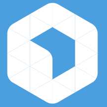
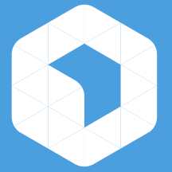

Laravel
The good, the bad and the ugly…
 
- AFUP Day Lyon / Laravel : the good, the bad and the ugly…

- AFUP Day Lyon / Laravel : the good, the bad and the ugly…

Stéphane Hulard
CTO, Formateur, Contributeur.
Laravel ?
Un peu d'histoire…
2011: Premier commit,
2013: v4.0.0,
2015: v5.0.0,
2019: v5.9.0 ?
Des racines communes…
… pour les habitués à Symfony 😊
Une surcouche spécifique !
Et une documentation très accessible…
Tout est dans la boite
▶ composer.json
▶ .env
▶ ORM (ActiveRecord) + Migrations
▶ CLI
▶ Templates
▶ Intégration frontend (Elixir)
Un peu de contexte
# Création d'un projet vierge
composer create-project laravel/laravel
# Démarrage du serveur web intégré à PHP
./artisan serve
# Homepage: http://localhost:8000
Arborescence du projet
├── app
│ ├── Console
│ │ └── Kernel.php
│ ├── Exceptions
│ ├── Http
│ │ ├── Controllers
│ │ ├── Middleware
│ │ └── Kernel.php
│ ├── Providers
│ └── User.php
├── bootstrap
├── config
│ ├── app.php
│ └── …
├── database
│ ├── migations
│ ├── seeds
├── routes
│ ├── api.php
│ ├── web.php
│ └── …
├── public
├── resources
└── storages
Au final…
▶ Laravel est un outil et seulement un outil.
▶ Très rapide pour prototyper.
▶ Très riche en fonctionnalités par défaut.
Attention à…
▶ Ne pas prendre tout les raccourcis possible.
▶ Prendre le temps d'apprendre.
▶ Réfléchir au projet dans son ensemble.
▶ Comprendre l'architecture de votre code.